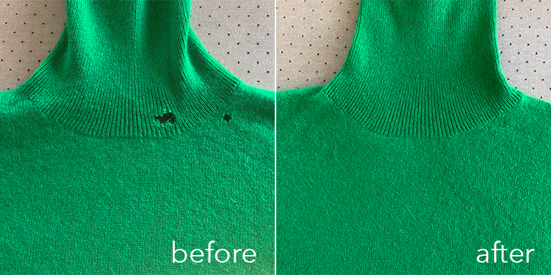
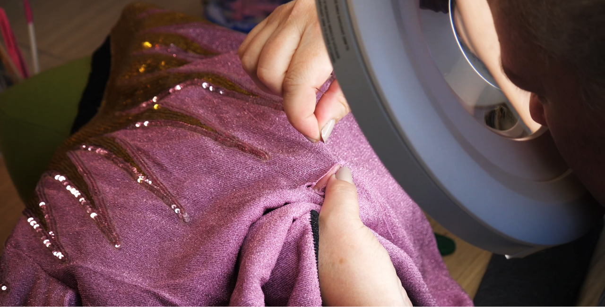
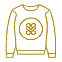

<div class="row no-gutters">
    <div class="col-12">
        <section class="hero-image">
            <app-header></app-header>
            <div class="row no-gutters">
                <div class="col-5 home-card text-white">
                    <p class="home-title">Holes? We Fix them.</p>
                    <p class="home-text font-weight-light">Garment Repair • Reweaving • Reknitting • Moth Hole Repair •
                        Sweater Repair • Knits • Cashmeres Suits • Restyling • Cleaning • Knit Alteration</p>
                    <div class="home-box-link-light p-3 d-flex justify-content-between align-items-center">
                        <p class="m-0">Schedule your repair with us today</p>
                        
                    </div>
                </div>
            </div>
        </section>
        <div class="row no-gutters mt-5">
            <div class="col-12 d-flex justify-content-between align-items-center">
                <div class="ml-5 mr-5">
                    <div class="d-flex flex-column">
                        <div>
                            <p class="home-title">Dedicated to our craft</p>
                            <p class="home-text font-weight-light">We have over 50 years of experience in reknitting and
                                reweaving garments.</p>
                            <p class="home-text font-weight-light">With equal care
                                and attention to detail, we will communicate with you to determine the best steps in
                                restoring your garment back to life</p>
                        </div>
                        <div class="home-box-link-dark p-3 d-flex justify-content-between align-items-center">
                            <p class="m-0">See our work</p>
                            
                        </div>
                    </div>
                </div>
                
            </div>
        </div>

        <div class="row no-gutters mt-5">
            <div class="col-12 d-flex justify-content-between align-items-center">
                
                <div class="ml-5 mr-5">
                    <p class="home-title">Repair. Don’t Replace</p>
                    <p class="home-text font-weight-light">Did you know that the apparel industry accounts for 6.7% of
                        the world’s greenhouse gas emissions?
                        When you choose to repair with Alterknit, you automatically join the fashion revolution and its
                        comittment to transparent and low carbon footprint </p>
                </div>
            </div>
        </div>

        <section class="sweater-bg mt-5">
            <!-- <div class="layer">
            </div> -->
            <div class="row no-gutters text-white">
                <div class="col-4">
                    <p class="mt-5 ml-5 home-title">What do our Customers Say</p>
                </div>
                <div class="col-8 mt-5">
                    <div class="feedback">
                        <p>“When my tailor said they couldn't alter my sweater I found AlterKnit. They said they could
                            fit it perfectly... and they did! They were very professional and knowledgeable.”</p>
                        <p class="text-gold">Emily, Colorado</p>
                    </div>
                    <div class="feedback">
                        <p>“My dog tore a huge hole in the chuky cable knit that I love. AlterKnit did a magnificient
                            job repairing it. Impeccable work.”</p>
                        <p class="text-gold">Sarah, Colorado</p>
                    </div>
                    <div class="feedback">
                        <p>“I got a hole in the Hugo Boss tuxedoI got married in. I shipped it in to AlterKnit, they
                            made me and my wife so happy. Thank you!”</p>
                        <p class="text-gold">James, New York</p>
                    </div>
                    <div class="feedback">
                        <p>“I send my sweaters to AlterKnit every year for cleaning and depilling, like a sweater spa
                            retreat! Hand down the best investment I've made for my cashmere collection.”</p>
                        <p class="text-gold">Christina, Ohio</p>
                    </div>
                </div>
            </div>
        </section>

        <div class="flow mt-5">
            <div class="row no-gutters">
                <div class="col-12">
                    <p class="home-title text-gray font-weight-bold text-center">The AfterKnit Process</p>
                </div>
            </div>
            <div class="row no-gutters">
                <!-- <div class="col-4">
                    1. What’s the Fix
                    <p>We work with you to determine the scope of service you need</p>
                </div>
                <div class="col-4">
                    2. We Repair it
                    <p>
                        Our unmatched team works diligently to repair and restore your items
                    </p>
                </div>
                <div class="col-4">
                    3. You get it back
                    <p>We ship you order back to you fixed and ready to enjoy again</p>
                </div> -->
                <div class="col-8 offset-2 d-flex justify-content-center align-items-center">
                    <div class="d-flex flex-column justify-content-center align-items-center">
                        
                        <p class="text-center home-text font-weight-bold">1. What’s the Fix</p>
                        <p class="text-center home-text">We work with you to determine the scope of service you need</p>
                    </div>
                    <div class="margin-spacer">
                        
                    </div>
                    <div class="d-flex flex-column justify-content-center align-items-center">
                        
                        <p class="text-center home-text font-weight-bold">2. We Repair it</p>
                        <p class="text-center home-text">Our unmatched team works diligently to repair and restore your items</p>
                    </div>
                    <div class="margin-spacer">
                        
                    </div>
                    <div class="d-flex flex-column justify-content-center align-items-center">
                        
                        <p class="text-center home-text font-weight-bold">3. You get it back</p>
                        <p class="text-center home-text">We ship you order back to you fixed and ready to enjoy again</p>
                    </div>
                </div>
            </div>
        </div>
        <app-footer></app-footer>
    </div>
</div>